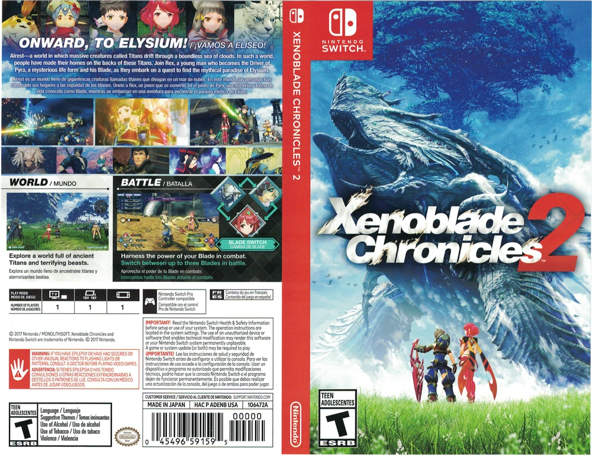
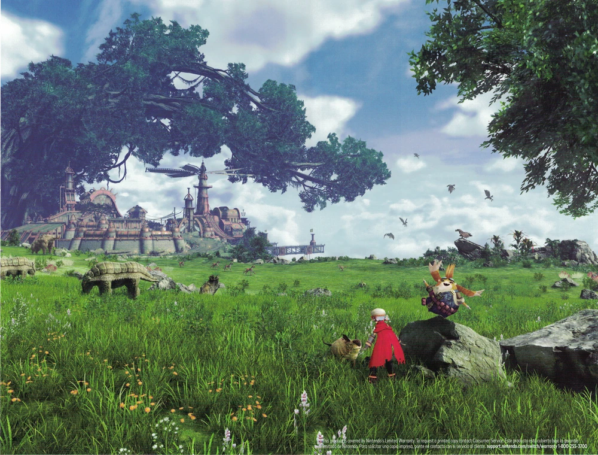
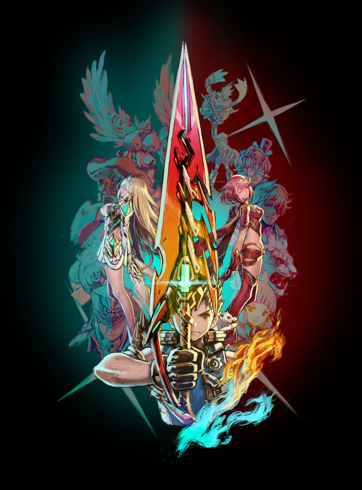

Content
| Categories | |
|---|---|
| Characters | |
| Enemies | |
| Areas |
Overview
The role-playing video game Xenoblade Chronicles 2, also known as Xenoblade 2, was created by Monolith Soft and released by Nintendo for the Nintendo Switch. On January 12, 2017, the game was revealed at the Nintendo Switch Presentation. On December 1, 2017, the game was made available in China, Hong Kong, Taiwan, Japan, North America, and Europe.
Xenoblade Chronicles 2 is the second main entry in the Xenoblade Chronicles trilogy.
Story
Media


